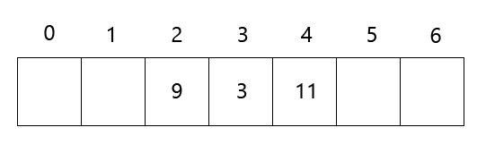

Ha a direkt címzés nem alkalmazható, vagy nem gazdaságos, hasító függvényt
alkalmazunk. Ez esetben az elem a $h(k)$ helyre kerül, vagyis egy $h$ hasító függvényt használunk
arra, hogy a rést a $k$ kulcsból meghatározzuk.
A nyílt címzés esetében az elemeket magában a hasító táblában tároljuk. A
hasító táblában $R$ típusú rekordokat tárolunk. Az $R$ típusú elemeknek van egy kulcsmezőjük, és
lehetnek járulékos mezőik. A kulcshalmazhoz hozzáveszünk egy $E$ és egy $D$ extremális konstanst,
amelyekkel azt fogjuk jelölni, hogy a tábla adott rése még üres, vagy már volt benne adat, de
töröltük.
| $R$ |
$+ \space k : U \cup \{ E, D \}$
$+ \space ...$ |
Egy elem keresésénél végig nézzük a tábla réseit mindaddig, amíg vagy megtaláltuk
a kívánt elemet, vagy pedig világossá nem vált, hogy az nincs benne a táblában. A nyílt címzésnél
nincsenek táblán kívül tárolt elemek és listák, mint a láncolásnál, ezért a nyílt címzéses hasító
tábla egy idő után betelhet, és ilyenkor további elemek már nem szúrhatók bele. Ebből persze adódik,
hogy az $\alpha$ kitöltöttségi arány soha nem haladhatja meg az 1-et.

Mivel a résekben közvetlenül helyezzük el az adatrekordokat, ezért kezelnünk kell
a kulcsütközéseket. Emiatt vezetjük be a próbafüggvény fogalmát. A próbasorozat mentén
hajtjuk végre a táblák alapműveleteit: a keresést, beszúrást, törlést. A próbasorozat első elemét
egy elsődleges hasító függvény adja meg: $h(k,0) = h_{1}(k)$.
Hasítótáblák műveletei:
Beszúrás:
Ha a $k$ kulcsú elemet akarjuk beszúrni a táblába, akkor először megnézzük, hogy
szabad-e a $h(k,0)$ indexű rés. Amennyiben igen, beszúrjuk, ha nem, akkor megnézzük szabad-e a
$h(k,1)$ indexű rés. És így tovább, egészen addig, amíg nem találunk neki egy szabad helyet vagy
végig nem próbáltuk a táblát.
Ha közben a beszúrandó kulccsal találkozunk, vagy a potenciális próbasorozat
végéig sem találunk szabad rést, a beszúrás meghiúsul.
Ha törlést is megengedünk a táblában, megváltozik a beszúrás algoritmusa. Az első
üres helyig tartó keresés közben megjegyezzük az első törölt rés indexét (ha van ilyen), mert
érdemes lesz oda beszúrni a rekordot.
Keresés:
A $k$ kulcsú elemet keresésekor elkezdjük sorban végignézni a réseket egészen
addig, amíg meg nem találjuk a keresett elemet, vagy üres helyet nem találunk.
Ha törlést is megengedünk a táblában, a törölt réseket kereséskor úgy kezeljük,
mintha foglaltak lennének és folytatjuk a keresést az első üres résig.
Törlés:
Egy elem törlése során először megkeressük a törlendő adatrekord helyét. Ha a
tábla tartalmazza a törlendő adatrekordot, akkor az ott tárolt kulcsot lecseréljük a $D$ (deleted)
értékre, ami jelzi, hogy a résben elhelyezhetünk új adatrekordot, de korábban ez már foglalt volt.
Lineáris próba:
Lineáris próba esetén a próbasorozat egy számtani sorozatot alkot.
- $h(k,i) = (h_{1}(k) + i) \space mod \space m$
Elsődleges csomósodás jelensége: A kulcsütközés esetén az azonos
próbasorozatok miatt nagyon besűrűsödik a táblának egy-egy szakasza, így megnő a keresés, beszúrás,
törlés lépésszáma. Gyakorlatban akkor használható, ha a kulcsütközés valószínűsége nagyon kicsi.
Négyzetes próba:
Négyzetes próba esetén a próbasorozat egy másodfokú függvény segítségével írható
le.
- $h(k, i) = (h_{1}(k) + c_{1}i + c_{2}i^2 ) \space mod \space m$
$c_{1}$ és $c_{2}$ valós konstansok, amelyeket úgy kell megválasztani, hogy a
próbasorozat a teljes táblát kiadja. Például, ha $m$ egy kettőhatvány, akkor $c_{1} = c_{2} =
\frac{1}{2}$
egy jó választás. Sajnos ennél a módszernél is jelentkezik probléma, az úgynevezett másodlagos
csomósodás: az azonos próbasorozatok mentén keletkeznek a táblában csomók, amelyek itt is
azt
eredményezik, hogy megnő a keresések, beszúrások, törlések lépésszáma.
Kettős hasítás:
Ebben az esetben a próbasorozat egy számtani sorozat, viszont kettő
hasítófüggvényt használunk.
- Az elsődleges hasító függvény megadja a kulcs helyét a táblában: $h_{1}: U \rightarrow 0..(m -
1)$
- A másodlagos hasító függvény megadja a lépések hosszát: $h_{2}: U \rightarrow 1..(m - 1)$
Két fontos elvárás van $h_{2}$ hasító függvénnyel kapcsolatban: ne adjon
semmilyen $k$ értékre nullát és legyen tetszőleges $k$ érték esetén relatív prím a tábla méretéhez
képest.
A próbasorozat általános képlete: $h(k,i) = (h_{1}(k) + i \cdot h_{2}(k)) \space mod
\space m$
Kulcsütközés esetén, ha $h_{1}(k_{1})=h_{1}(k_{2})$, akkor várhatóan
$h_{2}(k_{1}) \neq h_{2}(k_{2})$, azaz nem ugyanazon próbasorozat mentén próbálkozunk.